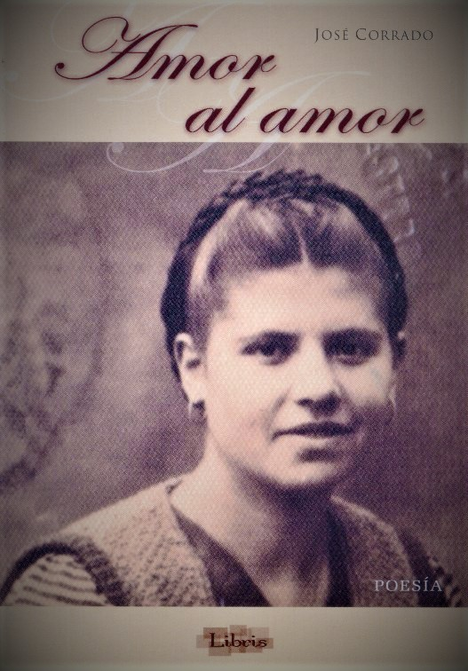
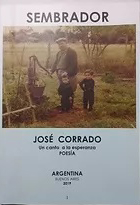

Amor al Amor
Tal vez podría denominarse adrenalina literaria. Es un impulso emocional, involuntario ante la responsabilidad confiada de construir un pórtico armónico al vergel, que sugiere un libro de bella prosa poética. Mas cuando el autor es alguien con quién se comparten esencias, mas allá de las formas, se comulga el mismo credo, en busca de la realización integral del ser humano y se cultiva compromisos en las profundidades del espíritu , la tarea despierta nueva gama de sensaciones, ya que la concentración se distiende en sonrisas y el yugo se evapora en la brisa leve. Refiriéndome al autor he aquí un recuerdo fundamental: José Corrado, empedernido viajero del país, acampaba con su familia en un camping de Puerto Iguazú ,Misiones , cuando por una radio local escucha una canción que despertó su interés. Se propuso, y logró contactar a sus autores. Así llegó a mi casa. Interesado en lo profundo. Al impulso de su gran sensibilidad, al amparo de su transparente alegría que conjuga y rima con simpatía y ... bonhomía. Hijo de inmigrantes italianos forjó en cerno los valores familiares y pudo ofrecerles a sus laboriosos padres , el título de Arquitecto, profesión estética si las hay. Su condición de artista es innata. Plástico, de oleo , acuarela ,tinta o lápiz de generosa producción, ahora suma a su constante expresión la vertiente poética. Este es su primer libro. El canto y el encanto de un río de aguas claras que fluye caudaloso desde la intimidad de un fresco manantial interior , convencido de su condición prístina para quién se acerque a abrevar del torrente que aflora a borbotones. Observo el título del libro, la tapa ilustrada con la fotografía del pasaporte de su madre juvenil imagen que sugiere amor en su mirada y encanto en su belleza- y disfruto de la prosa , la poesía , en tres sutiles ensambles de amor a la vida , amor a la tierra , y amor al camino. José Corrado rescata nítidas vivencias de inmigrante , navegando mar adentro donde solo se conjuga lo esencial, lo que queda, lo que aporta nutrientes a la vida misma. José Corrado viaja a las raices, escrudiña la vida desde la ventana de un bar, reza por las calles su ruego patrio , se conmueve y vierte lágrimas ante el despojo de nuestro país , mezcla colores perceptibles a todos los sentidos con los que contrasta vida y muerte , diamante y basura ,esclavitud y libertad, placeres de juegos infantiles y patéticos rostros del hambre ,todo ello bajo una mirada de amor buscando el soñado equilibrio. Tomo al azar uno de sus poemas pues todos tienen su mensaje y me encuentro con un himno a la esperanza ( me imagino ese himno cantado por un coro de niños en una plaza bajo un sol radiante ) “toda la vida no alcanza para crecer , todavía el mejor cuadro no lo empecé, mi mejor poema no lo escribí, el mejor beso no lo entregué, mi mejor caricia se está por ver, mi mejor obra comienza a nacer” Daniel Stéfani Poeta ,escritor y músico Puerto Iguazú- Misiones-Argentina Octubre de 2.002

Pasión por la Pasión

“A la venerable memoria de Francisco” Hablar de Francisco es hablar de la vida misma. Es encontrar en la memoria el recuerdo vívido de un ser superior, total. De aquellos seres que llegaron a éste mundo para perdurar en el surco de la existencia, sin recelos ni cuentas pendientes. Su estela de fulgor no conoció años ni tiempos. No hay pasado ni futuro en su ejemplo de vida. La atemporalidad de su conducta es la luz que guía a aquellos que sentimos la nobleza de alma como marco para nuestra cotidianeidad. Francisco simplemente es. Está allí en el transfondo de un día de sol, como en la tormenta más escabrosa. En la sonrisa simple de un niño como en el llanto de una madre de luto. Está en la vida misma, en la existencia misma que nos envuelve y nos condiciona. Su niñez, su adolescencia, su madurez, su vejez, su muerte, están reflejadas en la pluma del autor como un pétalo de rosa al viento. Con una prosa suave y sutil, pero con una profundidad desgarradora y palpitante. Con esa fibra que sólo conocen los que han encontrado el néctar de la vida, en el fondo de las conciencias, y la pueden plasmar a través de una pluma cargada de fragancia. Hablar de Francisco es hablar de Italia, de Oriolo, su pueblo. Del hambre y la desolación abrasadora, de la usura terrenal y el dolor que parte el alma por la muerte materna en los brazos de su hijo. De la guerra y el espanto atroz del drama humano más aberrante. Del viaje a una nueva esperanza y un nuevo amor. De la familia, el honor y la nobleza sin tapujos ni condiciones. Del sacrificio a destajo y los hornos de vidrio, para que nunca falten la sopa ni el libro. De los hijos y su vida por ellos. De Antonia, su fiel y abnegada amante, esposa y compañera durante medio siglo. De Gral. Belgrano y el retorno a las fuentes, a las manos cargadas de tierra, para recoger los frutos de esa virginidad añorada. De su muerte, en verano, para marcar a fuego a los que vienen atrás. Hablar de Francisco es hablar de los valores humanos más trascendentes. La nobleza, la amistad, el honor, la palabra empeñada, el jugarse entero por los demás, el sacrificio sin par ni límites, la alegría del esfuerzo compartido, el amor hacia su familia, la sonrisa siempre a flor de piel cual bálsamo milagroso ante las heridas de la adversidad. Y por sobre todas las cosas su pasión sin límites por sus ideales, su férrea e inquebrantable voluntad de Ser más que Parecer. De lograr transcurrir ésta vida plagada de maldad y mala fe, desde el lugar que Dios otorga a los privilegiados, a los que consiguen el don supremo de conocer lo profundo de la existencia humana, con todo su misterio. Desde la simplicidad de su intelectualidad hasta lo profundo de su sabiduría. Y era sabio porque sabía quien era él, podía adaptarse dinámica y permanentemente al medio que lo rodeaba y además le otorgaba a ese medio un valor agregado, un plus de ejemplo de vida y abnegación, propio de los elegidos. El autor rescata con una profunda sensibilidad esto que en pocas líneas he tratado de expresar. A través de una vivencia profunda de la realidad, traza una línea que llega hasta el fondo de un sentimiento compartido por toda una generación. Como un nutriente esencial para mi recorrido, leo los poemas con lagrimas en los ojos, con fuego en mi alma y con felicidad en mi espíritu, porque Francisco es mi padre y el autor mi hermano. Deseo fervientemente que Ustedes puedan sentir lo mismo. Dr. Jorge Corrado Abogado Profesor de Estrategia y Geopolítica Universidad Católica de La Plata
Sembrador
Gracias querido lector por abrir este libro y asomarse a mi paisaje interior. En estas páginas quiero dar testimonio, en la incomparable permanencia de la letra escrita, de lo de lo que sin duda califico” la mejor sustancia del planeta”, EL SEMBRADOR. En un mundo donde el hombre ha perdido el rumbo, donde se caen los valores más preciados de lo humano, cuando el mal parece triunfar, en el que mientras muchos destruyen, otros se dedican incansablemente a reconstruir y apuestan por la vida, aparecen como luz en la oscuridad aquellos que empecinadamente se dedican a sembrar. Los que ponen en cada semilla la esperanza en un mañana mejor. También este libro tiene la intención de ser una semilla. Si logra entra en tu corazón encontrando tierra fértil, algo de tiempo, y amor, seguramente se convertirá en un árbol hermoso lleno de frutos que en tus manos serán repartidos como nuevas semillas a otros para que las planten en sus corazones. El esfuerzo de sembrar y hacer que la planta crezca san y fuerte es nuestro, pero la gran tarea es de Dios que pone en cada semilla y en cada sembrador el futuro de la humanidad. Alguien dijo” siembra que en algún lugar te bendecirá la lluvia!” Gracias por darme la oportunidad de florecer.